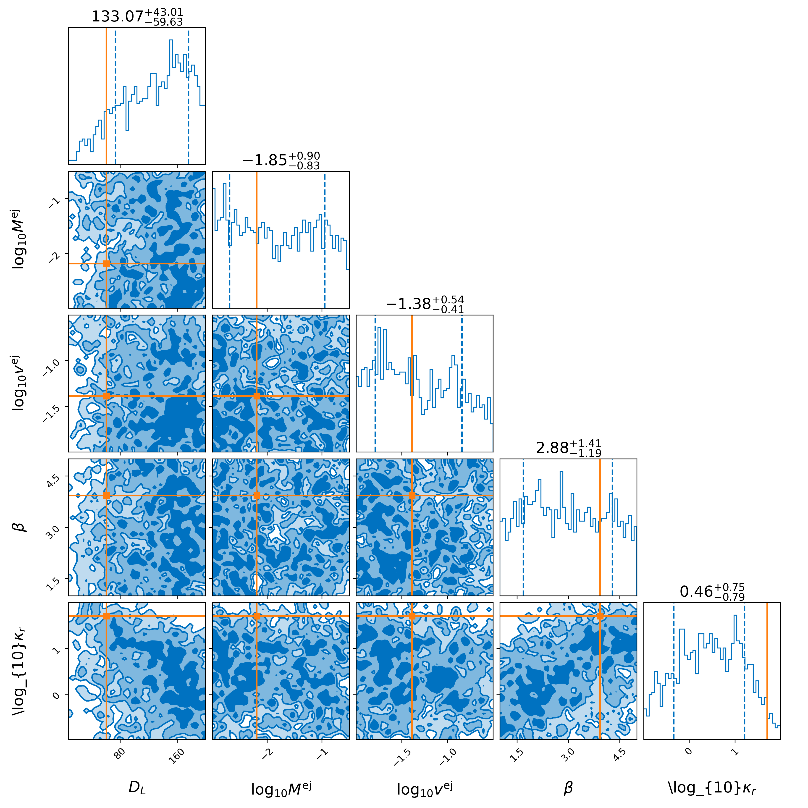
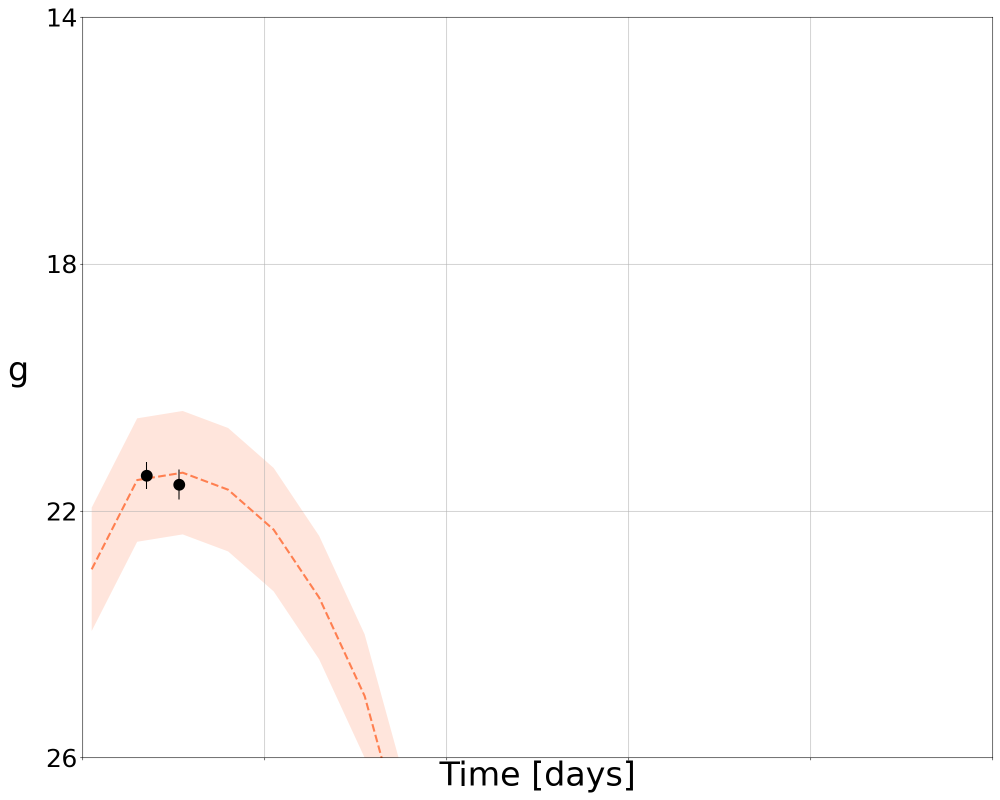
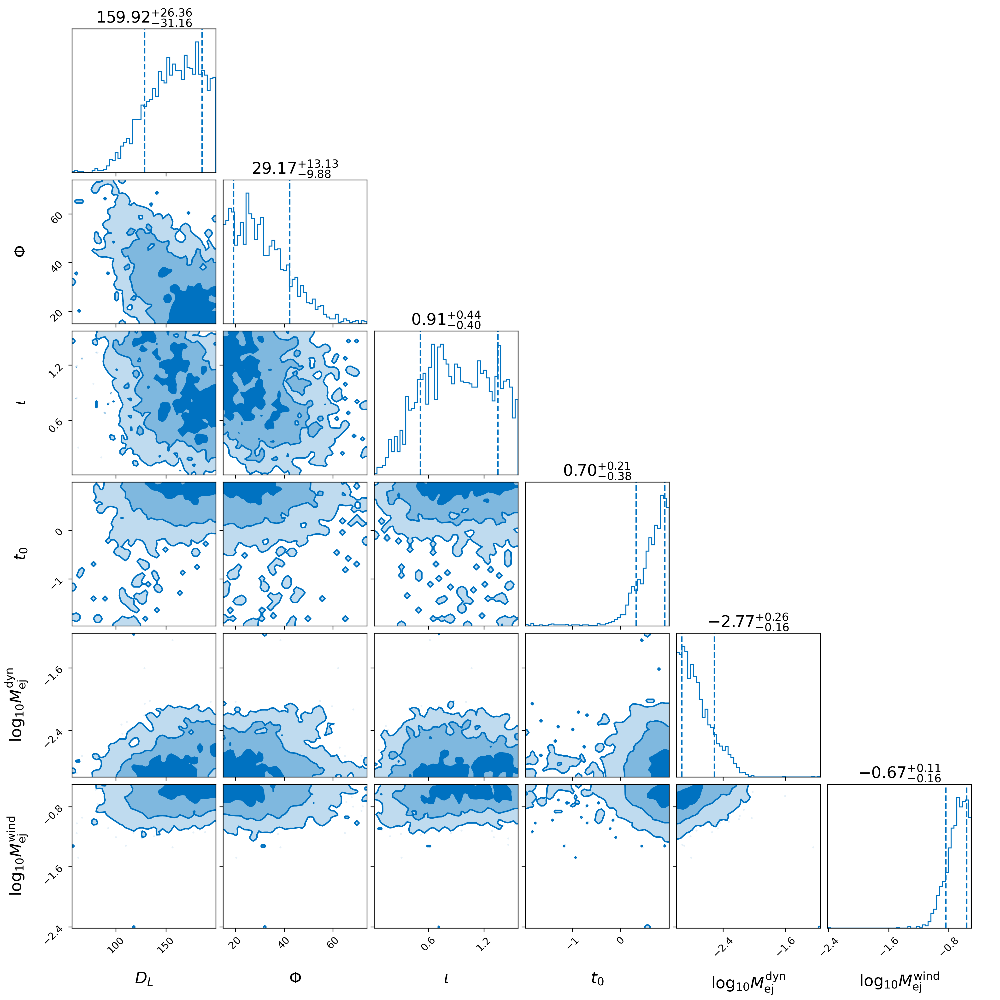
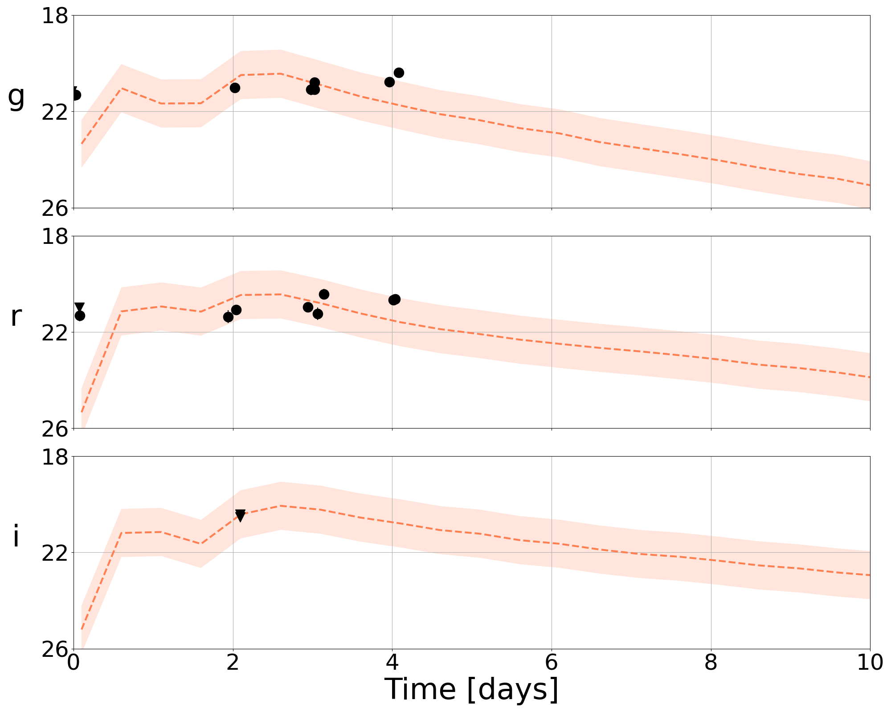

Light curve fitting
Given a light curve from an optical survey telescope (and potential follow-up), the goal is to analyze the light curve to perform parameter inference. Within NMMA, there are a number of models available.
Models
Some are analytic / semi-analytic models that can be sampled, others rely on sampling from a grid of modeled lightcurves through the use of Principle Component Analysis (PCA) and an interpolation scheme (either Gaussian process modeling or neural networks).
In many cases, the lightcurve predicted by each set of parameters is extremely high-dimensional, given the number of measurements made. Our goal for this example is to to determine the best-fit model parameters for an object based on its observed lightcurve.
Creating an injection file
There are other options for creating an injection file, such as a pre-computed simulation set. In this case a prior is still needed, but it will only be applied where it is necessary. Taking the Petrov et al. 2022 samples and the Bu2019lm prior as an example:
nmma_create_injection --injection-file example_files/sim_events/injections.dat --prior-file priors/Bu2019lm.prior --eos-file example_files/eos/ALF2.dat --binary-type BNS --n-injection 100 --original-parameters --extension json --aligned-spin
The injection file can also be created using only a prior, Bu2019lm in this case:
nmma_create_injection --prior-file priors/Bu2019lm.prior --eos-file example_files/eos/ALF2.dat --binary-type BNS --n-injection 100 --original-parameters --extension json --aligned-spin
resulting in an injection.json file for use below.
Example fit to simulated data
Following the quick start, we assume that an injection file has been made generated and made available. For example, there are a number of extra parameters available to modify the light curve sampling, including:
If one is interested in realistic ZTF-like light curves, one should use:
–ztf-sampling: Uses a gaussian KDE to simulate ZTF pointing set for ZTF-II in g and r, and private/partnernship in i
–ztf-uncertainties: Simulates magnitude uncertainties using skew normal fits to forced photometry uncertainties in mag_bins=[12,18,20,21,23]
–ztf-ToO: Adds realistic ToO pointings during the first one or two days (1/2 randomly chosen) for specified exposure times: either 180s (valid for skymaps <1000sq deg) or 300s (skymaps >1000sq deg). Has no effect if –ztf-sampling is not turned on.
If instead one is interested in potential Rubin-like ToO light curves, one should use:
–rubin-ToO: Adds ToO obeservations based on the strategy presented in arxiv.org/abs/2111.01945.
–rubin-ToO-type: Type of ToO observation. Has no effect if –rubin-ToO is not turned on.
One may also be interested in a custom strategy. For this, one can use the flags:
–photometry-augmentation: A flag to augment photometry to improve parameter recovery
–photometry-augmentation-seed: Set a seed for the augmentation
There are a few different forms this may take, for example, specifying:
–optimal-augmentation-filters: Provide a comma seperated list of filters to use for augmentation (e.g. g,r,i). If none is provided, will use all the filters available. with
–photometry-augmentation-N-points: Specify the number of augmented points to include taken randomly from –optimal-augmentation-filters
However, if you specify:
–optimal-augmentation-times: Provide a comma seperated list of times to use for augmentation in days post trigger time (e.g. 0.1,0.3,0.5). If none is provided, will use random times between tmin and tmax). You can choose the times to simulate for a given filter.
We can use these flags as follows.
Taking ZTF as an example:
light_curve_analysis --model Bu2019lm --svd-path ./svdmodels --outdir outdir --label injection --prior priors/Bu2019lm.prior --tmin 0.1 --tmax 20 --dt 0.5 --error-budget 1 --nlive 512 --Ebv-max 0 --injection ./injection.json --injection-num 0 --injection-outfile outdir/lc.csv --generation-seed 42 --filters g,r,i --plot --remove-nondetections --ztf-uncertainties --ztf-sampling --ztf-ToO 180
This produces a light curve and parameter inference of the form:


Taking Rubin as an example:
light_curve_analysis --model Bu2019lm --svd-path ./svdmodels --outdir outdir --label injection --prior priors/Bu2019lm.prior --tmin 0.05 --tmax 20 --dt 0.1 --error-budget 1 --nlive 512 --Ebv-max 0 --injection ./injection.json --injection-num 0 --injection-outfile outdir/lc.csv --generation-seed 42 --filters u,g,r,i,z,y --plot --remove-nondetections --rubin-ToO --rubin-ToO-type BNS --injection-detection-limit 23.9,25.0,24.7,24.0,23.3,22.1
Analysis of a real object
Of course, analysis of simulated objects are not the ultimate goal for the analysis. However, we can also analyze real light curves. We take as an example one of the files in example_files/candidate_data/ (ZTF21abjvfbc.dat) and run:
light_curve_analysis --model Bu2019lm --svd-path ./svdmodels --interpolation_type tensorflow --outdir outdir --label injection --prior priors/Bu2019lm.prior --tmin 0.1 --tmax 20 --dt 0.5 --error-budget 1 --nlive 512 --Ebv-max 0 --trigger-time 59397.28347219899 --data example_files/candidate_data/ZTF21abjvfbc.dat --plot
One might note that the –trigger-time is set specifically here in MJD, taken in this example to be the first detection of the object.
This produces a light curve and parameter inference of the form:

